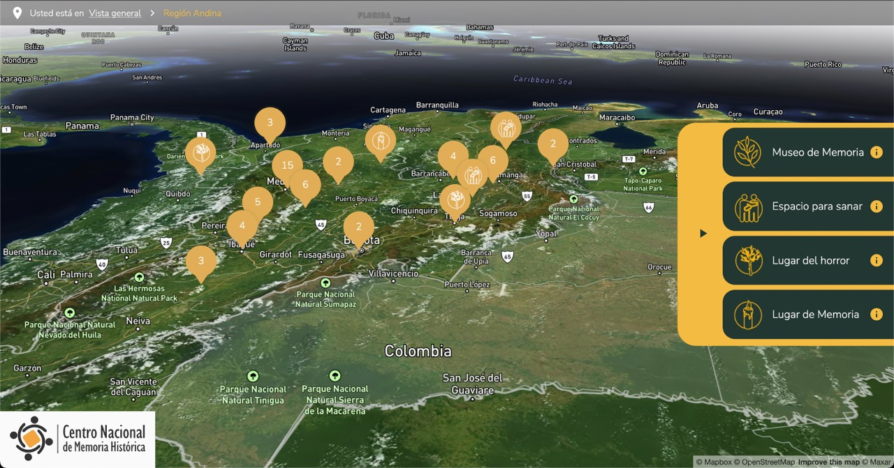
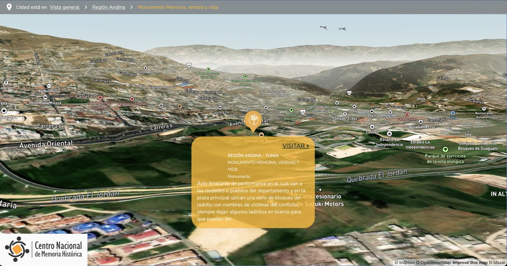
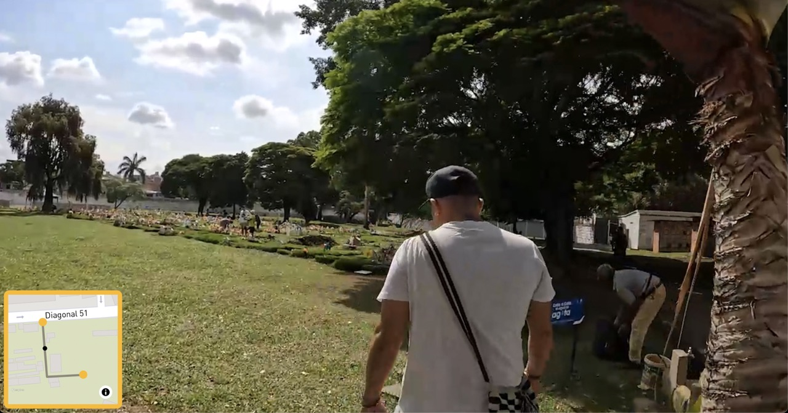

Museo Virtual for the Centro Nacional de Memoria Historica
Preserving Memory Through Innovation
Museo Virtual is a groundbreaking platform designed to showcase regional memory and culture through immersive virtual exhibitions. As the lead developer, I worked on creating an intuitive interface that leveraged interactive maps to represent territories and their unique histories. The app is built with a strong focus on accessibility and decentralization, ensuring that cultural memory remains preserved and uncensored.
- 
- 
- 
The project integrates advanced mapping tools, such as Mapbox, to provide users with an engaging way to explore geographical and historical data. Each map view highlights the rich diversity of local cultures, with layers that incorporate multimedia content like images, videos, and documents. A key technical achievement was implementing decentralized storage using IPFS, guaranteeing secure and permanent access to resources while preventing data loss or censorship.
Throughout the development process, I focused on creating a user-friendly experience that blended storytelling with cutting-edge technology. From the design of custom map styles to the integration of backend services, every element was carefully crafted to connect users with the stories behind the regions they explore. Museo Virtual stands as a testament to the power of digital tools in preserving and democratizing cultural heritage.
Explore the app on the official site
You can still find my profile in the About us section